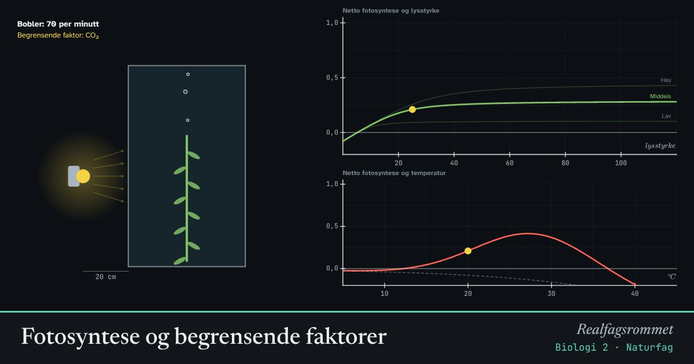

Fotosyntese og begrensende faktorer
Vannplanten lager oksygen i fotosyntesen, og vi ser det som bobler. Lys, karbondioksid og temperatur bestemmer farten. Den faktoren det er minst av, begrenser hvor fort det går.
Start animasjonen
Formler
Om animasjonen
Lysstyrken avtar med kvadratet av avstanden til lampen. Halverer du avstanden, blir lyset fire ganger sterkere.
Planten driver også celleånding hele tiden, og da brukes oksygen. Boblene viser bare det som er igjen: netto fotosyntese. Ved kompensasjonspunktet er fotosyntesen og celleåndingen like store, og det kommer ingen bobler.
Ved svakt lys er lyset den begrensende faktoren: mer lys gir mer fotosyntese, men mer CO₂ hjelper lite. Ved sterkt lys flater kurven ut, og da er CO₂ eller temperatur begrensende.
Fotosyntesen styres av enzymer. For høy temperatur ødelegger dem, mens celleåndingen øker. Derfor blir netto fotosyntese lavere når det blir for varmt.
Prøv dette
- Flytt lampen fra 40 cm til 20 cm. Hvor mye mer lys får planten? Hvor mye flere bobler blir det?
- Finn avstanden der det nesten ikke kommer bobler. Hva kalles dette punktet?
- Sett lampen helt inntil. Hva skjer når du øker CO₂? Hva er begrensende nå?
- Hvorfor er det lurt å ha litt høyere CO₂ i drivhus?
Kompetansemål
- Naturfag: Karbonforbindelser og karbonets betydning for livet
- Biologi 2: Fotosyntese og celleånding